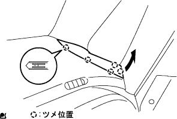

ウインドシールド ガラス 取り外し |
| 1. ウインドシールド ワイパ アーム カバー取りはずし |
| 2. フロントワイパアームRH取りはずし |
ナットをはずし、フロントワイパアームRHを取りはずす。
| 3. フロントワイパアームLH取りはずし |
ナットをはずし、フロントワイパアームLHを取りはずす。
| 4. フード トゥー カウルトップ シール取りはずし |
 |
クリップのかん合6箇所をはずし、ボンネツト(フード)ツウカウルトップシールを取りはずす。
| 5. カウルトップベンチレータ ルーバ RH取りはずし |
 |
クリップ2個およびツメのかん合7箇所をはずし、カウルトップベンチレータルーバRHを取りはずす。
| 6. カウルトップベンチレータ ルーバ LH取りはずし |
 |
クリップ1個およびツメのかん合8箇所をはずし、カウルトップベンチレータルーバLHを取りはずす。
| 7. フロントドア オープニングトリム ウェザストリップ RH取りはずし |
| 8. フロントピラー ガーニッシュ LWR RH取りはずし |
|  |
車両後方端部から上方に引き、ツメのかん合5箇所をはずす。
車両後方に引き、フロントピラーガーニツシユLWR RHを取りはずす。
| 9. フロントピラー ガーニッシュ RH取りはずし |
 |
ガーニツシユ上部から手で車両内側方向に引いて、クリップのかん合を取りはずし、フロントピラーガーニッシュRHを取りはずす。
| 10. リヤドア オープニングトリム ウェザストリップ LH取りはずし |
| 11. ピラーNO.1 ガーニッシュ LH取りはずし |
ツメのかん合をはずし、ピラーNo.1ガーニツシユLHを取りはずす。
| 12. フロントピラー ガーニッシュ LH取りはずし |
 |
ガーニッシュ上部から手で車両内側方向に引いて、クリップのかん合をはずし、フロントピラーガーニッシュLHを取りはずす。
| 13. マップ ランプASSY取りはずし |
 |
保護テープを巻いたマイナス薄刃ドライバーを使用して、ツメのかん合をはずし、レンズを取りはずす。
スクリュー２本を取りはずす。
 |
ツメのかん合をはずす。
コネクターをはずし、マップランプASSYを取りはずす。
| 14. アシストグリップASSY取りはずし（FR LH） |
 |
保護テープを貼ったマイナス薄刃ドライバーを使用し、ツメのかん合をはずして、アシストグリツプカバー2個を取りはずす。
 |
図の順序でツメのかん合をはずし、アシストグリップASSYを取りはずす。
| 15. バイザASSY RH取りはずし |
スクリュー2本をはずし、バイザASSY RHを取りはずす。
| 16. バイザASSY LH取りはずし |
| 17. バイザ ホルダ取りはずし |
 |
バイザホルダを左に60-120°回転させて、引き抜く。
| 18. ルーフ ヘッドライニングASSY取りはずし |
| 19. インナリヤビューミラーASSY取りはずし |
 |
保護テープを貼ったマイナスドライバーを使用して、ツメのかん合をはずし、インナリヤビユーミラーカバーを取りはずす。
保護テープを貼ったマイナスドライバーを使用して、ツメを（ａ）の方向に押した状態にする。
インナリヤビユーミラーＡＳＳＹを図の（ｂ）方向に引き抜いて、インナリヤビユーミラーＡＳＳＹを取りはずす。
| 20. ウィンドシールド アウトサイドモールディング取りはずし |
 |
カッターナイフをし使用して、ウインドシールドアウトサイドモールデイングを切断する。
| 21. ウインドシールド ガラス取りはずし |
コネクタを切り離す。(ウインドウデアイサー付き車)
吸引ゴムをガラスに取り付ける。
ガラス外周のボデー面に保護テープを貼る。
接着部に石けん水を十分に塗布する。

 |
接着部にウインドシールドナイフを差し込む。
刃先とガラス端部を直角に保持しながらウインドシールドナイフの刃をガラス面および端部に合わせるようにして、ガラス端部と平行に引いて接着剤を切断する。
図のようにピアノ線(０．６ｍｍが適当)を通し、両端をマイティプラーに取り付ける。
ピアノ線を交互に引いてストッパを残し、接着剤を切断する。
吸引ゴムを持ってストッパのかん合をはずし、ウインドシールドガラスを取りはずす。